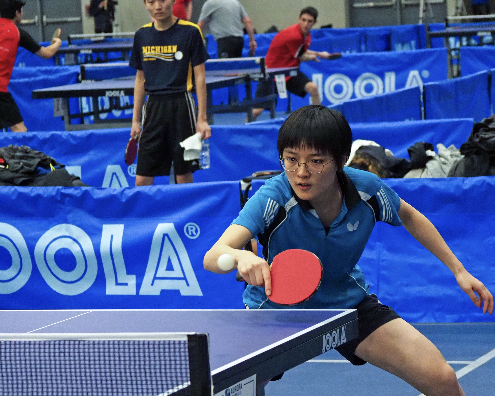
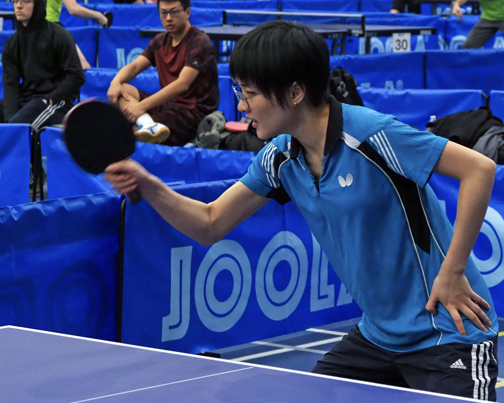
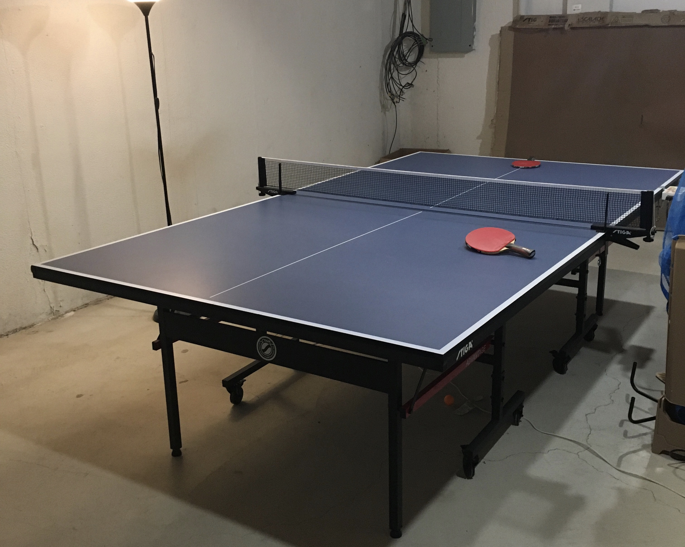

My Favorite Sport
Table tennis (Ping Pong) is a very import part of my life. I started learning table tennis when I was 9 and fell in love with it in my first week of training. Then I trained for almost 4 years during summer and winter breaks. Table tennis means a lot to me. Every time I am stressed or upset, I get my paddle, practice with my friends, and feel all the negative thoughts go away.



Note: There are two ways to hold the paddle, one is called pen-hold and the other is called shake-hand. I started with a pen-hold grip and then switched to shake-hand, then to pen-hold…… It’s a very long story, but now I’m back to shake-hand.